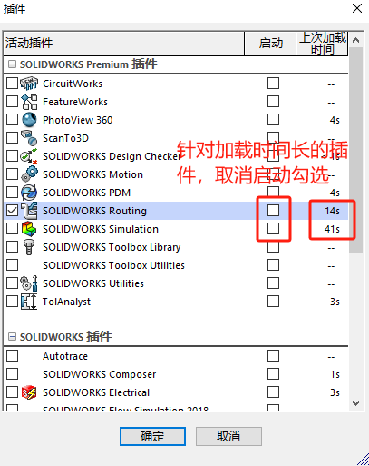

程序启动慢
solidworks启动慢的原因&可能出现的问题：一般打开SOLIDWORKS会经历这几个过程：
- 加载注册表
- 验证许可证
- 加载用户界面零部件
- 初始化VBA引擎
- 加载任务窗格
- 初始化.NET 环境
- 启动SOLIDWORKS
- 正在加载插件
解决方法
我们可以先留意下在哪个过程中用的时间最多，然后对应下面的解决方案进行优化：
1、加载注册表
赋予管理员权限，或者以管理员的账户登录系统
2、验证许可证
单机&网络：对“C:\ProgramData\FLEXnet”这个文件夹重命名(需要重新激活软件)
网络版：还可以可对比借出和联网速度差异。同时使用无线和有线网络可能对验证许可证的速度有影响。
方法：
删掉C:\ProgramData\FLEXnet文件夹的几个文件。由于ProgramData这个文件夹默认是隐藏的，所以我们要把文件隐藏属性打开，方法如下：
1、打开“我的电脑”，然后点击顶部的【查看】-【选项】：
2、打开文件夹选项后，点击查看-找到显示隐藏的文件、文件夹和驱动器，并选中。并且把“隐藏受保护的系统文件”前边的对勾去掉
3、找到C:\ProgramData\FLEXnet文件夹，将下面的图示文件sw_D_三个文件删除，或者剪切到别的地方备份，如果不行好在粘回来(推荐)。现在试试打开SolidWorks的速度正常了没。
3、初始化.NET环境
将安装文件夹中“PreReqs“文件夹中的必备组件重新安装,如“SOLIDWORKS 2018 SP02\PreReqs”对比重新安装没有效果。
4、加载插件
打开SOLIDWORKS后，可在插件窗口查看哪个插件加载时间过长，可暂时去除勾选，在需要使用时再加载插件，对于不必要的插件可以取消启动勾选。
文件打开慢
当【系统选项-文件位置-参考文件夹】设置过多导致。打开装配体时，软件去多路径下寻找参考影响打开时间。
方法：取消【系统选项-文件位置-参考文件夹】无用路径设置即可。
影响因素：
打开零件大小
打开零件数量
配置：
“打开进度指示器”
工具可用于识别在文件打开期间花费最多时间的操作。
装配体打开信息：
• “打开零部件”操作是驱动器的读/写速度缓慢，或者网盘连接缓慢。
• “更新装配体”操作是
• “已用时间”
• “上次打开时间”
工程图打开信息：
• “加载零部件”操作是驱动器的读/写速度缓慢，或者网盘连接缓慢
• “更新工程图”操作是
• “更新图形”操作是
• “已用时间”
• 工程图中的“上次打开时间”。
“性能评估”
工具检查装配体和工程图的性能，然后显示多个统计数据和建议以提高性能。在某些情况下，您可以允许该软件对您的装配体或工程图进行更改以提高性能。“性能评估”工具位于“工具”>“评估”>“性能评估”中。
“装配体可视化”
工具验证图形问题。例如，在“打开进度指示器”（请参阅 B 部分）显示“更新图形”操作花费了打开装配体所用的大部分时间后，您可以将该工具用作调查的辅助步骤。“装配体可视化”工具位于“工具”>“评估”>“装配体可视化”中。
激活“装配体可视化”后，您可以通过包括在 SOLIDWORKS 图形区域中显示零部件所需的“图形-三角形”和“三角形图形总数”参数对装配体可视化列表进行排序。这些参数随着图像质量的提高而增加，这会随着三角形数量的增加而影响性能。